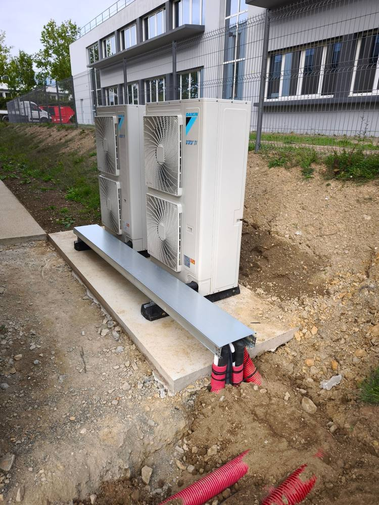

Douche à l’italienne, colonne thermostatique
Rezé
Colonne de douche thermostatique noir mat et carrelage grand format effet marbre.
Installation, entretien et dépannage pour particuliers, professionnels et tertiaire en Loire-Atlantique. Fiabilité, efficacité, durabilité.
Choisissez votre besoin pour voir les détails.
Faites glisser pour découvrir →
Installation, entretien et dépannage en plomberie.
En savoir plus →
Installation, entretien, dépannage et désembouage.
En savoir plus →
Installation, entretien et dépannage de climatisation.
En savoir plus →
Plomberie, chauffage et clim pour les pros et le tertiaire.
En savoir plus →Intervention rapide pour résoudre tous vos problèmes.
Garantir la longévité et la performance via un contrat d’entretien.
Nettoyage de votre système de chauffage pour plus d’économies et d’efficacité.
Travail soigné et de qualité dans un cadre transparent et agréable.
Rezé
Colonne de douche thermostatique noir mat et carrelage grand format effet marbre.
Pornic
Production de chaleur Ecodan (Mitsubishi Electric) avec ballon, vase d’expansion et réseau cuivre calorifugé.
La Baule-Escoublac
Groupe extérieur Panasonic (fluide R32) posé sur plots en toiture-terrasse d’un immeuble.
Nantes
Deux groupes extérieurs Daikin VRV IV sur dalle béton, avec chemin de câbles et gaines.
Basé au Temple-de-Bretagne, j’interviens en Loire-Atlantique et alentours.
Carte schématique, localisations approximatives. Les numéros correspondent aux réalisations. Survolez une réalisation pour la situer.
Ces villes, et bien d’autres.
Plombier très professionnel, qui connaît bien son métier.
Client Travaux.com · Plomberie · avril 2025
Un travail soigné par un professionnel compétent et aimable, réalisé dans le délai convenu.
Client Travaux.com · Travaux réalisés
Intervention rapide et efficace pour remplacer le flotteur d’un WC suspendu.
Client Travaux.com · Dépannage plomberie
Avis publiés sur la fiche Travaux.com de Fluides & Co, résumés.
Les questions qu’on me pose le plus, avec des réponses directes.
Ça dépend de la situation et de l’endroit où vous êtes, donc je préfère ne pas vous promettre un chiffre que je ne tiendrais pas. Ce que je peux dire : le dépannage fait partie de mon métier et je m’organise pour intervenir vite. Appelez-moi au 06 77 49 23 84, expliquez ce qui se passe, et je vous dis franchement quand je peux passer. En attendant, coupez l’eau au robinet d’arrêt pour limiter les dégâts.
Je suis basé au Temple-de-Bretagne et j’interviens en Loire-Atlantique et dans les environs, surtout dans l’ouest du département : l’agglomération nantaise, Saint-Nazaire, La Baule, Guérande, Pornic, Saint-Brevin ou Pornichet, par exemple. Je travaille aussi bien pour les particuliers que pour les professionnels. Votre commune n’est pas citée ? Appelez-moi, je vous dirai si je peux venir.
Un artisan du bâtiment doit être assuré : en responsabilité civile professionnelle, pour les dégâts accidentels pendant un chantier, et en garantie décennale pour les travaux qui touchent à la solidité ou à l’usage du bien. C’est un réflexe à avoir avec n’importe quel artisan : demandez ses attestations avant de signer, et n’hésitez pas à me demander les miennes.
Le plus simple : appelez-moi au 06 77 49 23 84, écrivez à fluidesandco44@gmail.com ou remplissez le formulaire en bas de page, en précisant votre besoin et si c’est urgent. Selon le projet, je dois parfois voir les lieux avant de chiffrer. Si le devis a un coût, je vous le dis dès le premier échange, sans surprise, et vous avez un devis écrit avant le début des travaux.
Difficile de donner un tarif sérieux sans savoir de quoi il s’agit : une recherche de fuite, un dépannage ou un remplacement n’ont ni le même temps passé ni les mêmes fournitures. En général, un prix se compose d’un déplacement, de la main-d’œuvre et du matériel. Décrivez-moi votre problème, je vous donne un chiffrage clair, et rien ne démarre sans votre accord sur un devis écrit.
Décrivez votre besoin en quelques lignes et indiquez son degré d’urgence : je reviens vers vous.